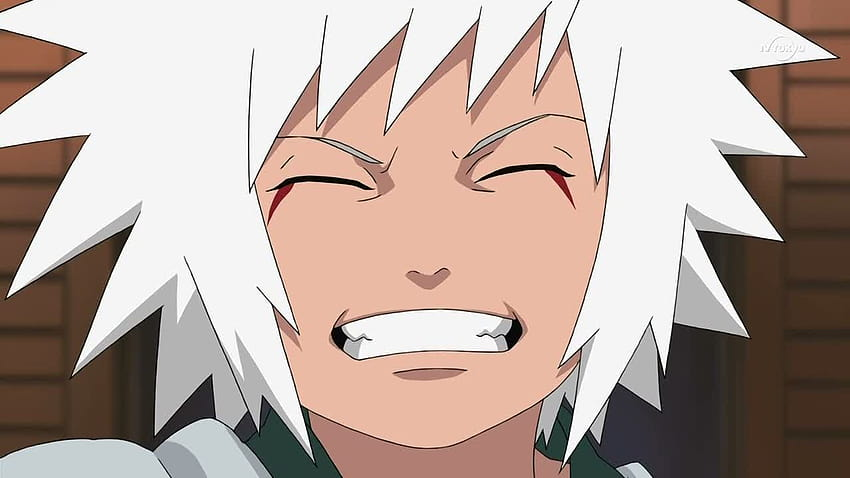
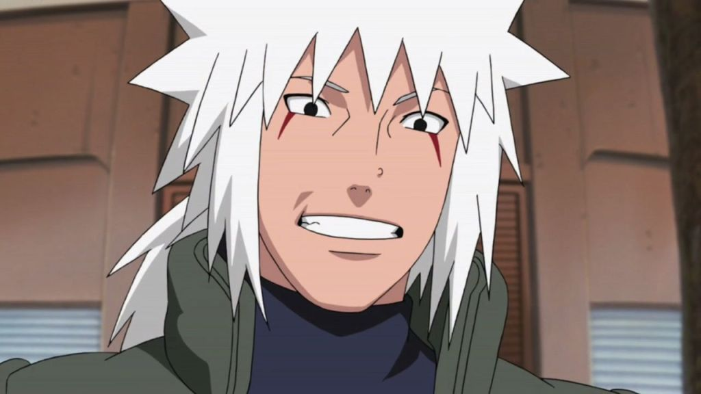
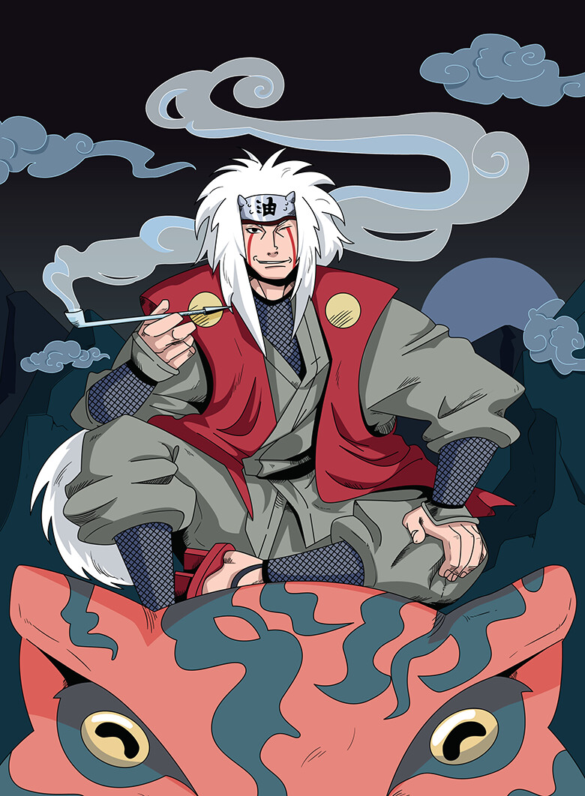

Jiraiya (自来也, Jiraiya) fue uno de los legendarios Sannin junto con Tsunade y Orochimaru, quienes fueron entrenados por el Tercer Hokage. Escribió una popular serie de libros para adultos, llamada ICHA ICHA, por esto y entre otras muchas razones, Naruto lo llama Sabio Pervertido (エロ仙人, Ero-sennin). También fue conocido como el Sabio Sapo (虾蟇仙人, Gama Sennin), gracias a sus invocaciones de sapos y por la habilidad de entrar en el Modo Sabio.
De niño, Jiraiya fue un estudiante del Tercer Hokage junto con sus compañeros Orochimaru y Tsunade. Durante su niñez, desarrolló una rivalidad amistosa con Orochimaru y sintió afecto hacia su compañera Tsunade. Debido a que era el torpe del grupo, entrenó muy duramente, hasta el punto que Hiruzen le mostró la Técnica de Invocación para que aprendiera a usarla. Tras un tiempo, fue teletransportado hacia el Monte Myōboku por usar esta técnica sin tener ningún contrato con un animal. Cuando llegó a ese lugar, Fukasaku decidió entrenarlo debido a que lo reconoció como "el niño que tendría que llegar al monte" según una profecía del Gran Sapo Sabio. Así, alternaba su entrenamiento en Konoha con el Tercer Hokage, y después de sus misiones iba al Monte Myōboku a entrenar con los sapos.
Con el transcurso de los años, se convirtió en un gran shinobi. El Gran Sabio Sapo expresó una visión sobre su destino, según la cual viajaría por el mundo escribiendo libros y entrenaría a una persona que se convertiría en un revolucionario que traería paz, o bien, traería dolor y sufrimiento al mundo, así como que en algún momento de su vida tomaría una gran decisión. Para cumplir esta profecía, Jiraiya dejó Konoha para recorrer el mundo y escribir sus libros. 
Cuando Jiraiya regresó de su viaje, entrenó a Minato Namikaze (futuro Cuarto Hokage) y participó en la Segunda Guerra Mundial Shinobi, donde junto a sus compañeros y varios ninjas de Konoha, atacaron Amegakure, resultando su equipo los únicos supervivientes de la lucha contra Hanzō de la Salamandra. Por esta gran hazaña, el líder de Amegakure decidió dejarlos vivir y nombrarlos como los legendarios Sannin, ganando así renombre a nivel mundial.
Después de esta pelea, los ninjas de la Hoja se encuentran con huérfanos de la Lluvia, los cuales, hambrientos, piden comida a Jiraiya, quien decide cuidar de dichos niños hasta que pudieran cuidarse solos. Durante tres años, Jiraiya entrenó a los huérfanos, enseñándoles Ninjutsu y también escribió un libro llamado "La Historia de un Shinobi Absolutamente Audaz".
Después de entrenar a los niños de la Lluvia, decide regresar a su villa, pero en ese momento, se desata la Tercera Guerra Mundial Shinobi, donde los legendarios Sannin escribieron su leyenda, haciendo que fueran reconocidos en cualquier parte. Cuando Minato se convirtió en Hokage, leyó el primer libro de Jiraiya y decidió poner el nombre del protagonista del libro a su hijo (Naruto Uzumaki), y nombrar a Jiraiya como su padrino.
Años más tarde, cuando Orochimaru decidió dejar la Hoja, Jiraiya fue tras él como amigo para convencerlo de que volviera, pero éste se rehusó, convirtiéndose en un Ninja renegado e ingresando en la Organización Akatsuki. Tras ello, Jiraiya se convierte en un shinobi errante para seguir los movimiento de Orochimaru y Akatsuki, regresando a la Hoja después de unos años.
| Nombre | Relación | Descripción |
|---|---|---|
| Minato Namikaze | Alumno | Fue el maestro de Minato, y tenían una relación muy cercana basada en respeto y admiración mutua. |
| Naruto Uzumaki | Alumno | Jiraiya fue mentor y figura paterna para Naruto, enseñándole habilidades cruciales y protegiéndolo. |
| Tsunade Senju | Amiga | Jiraiya siempre tuvo una relación especial con Tsunade, manteniendo una amistad de años y un amor no correspondido. |
| Orochimaru | Amigo de la infancia | A pesar de sus diferencias y la eventual traición de Orochimaru, ambos fueron compañeros en su juventud. |
| Hiruzen Sarutobi | Maestro | Jiraiya fue entrenado por el Tercer Hokage, Hiruzen, y siempre mostró gran respeto hacia él. |